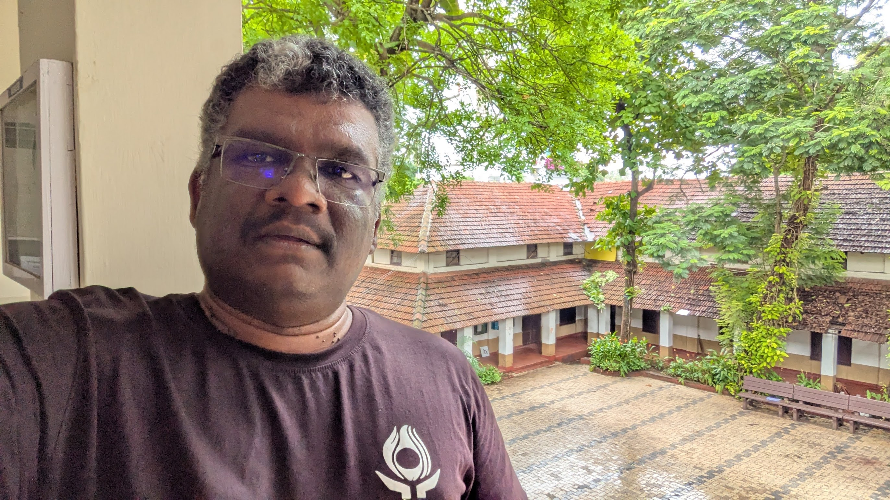

About Me

I'm Baiju Muthukadan, a passionate technologist with over 23 years of experience in software development, and technical leadership. I created this blog to share my knowledge, insights, and experiences in the world of technology and beyond.
AI Assistance Disclosure
This blog is written with the assistance of artificial intelligence tools. While I carefully review and edit all content to ensure accuracy and alignment with my views, AI helps me enhance my writing, generate ideas, and improve the overall quality of the content.
Thank you for visiting my blog. I hope you find the content here valuable and insightful!